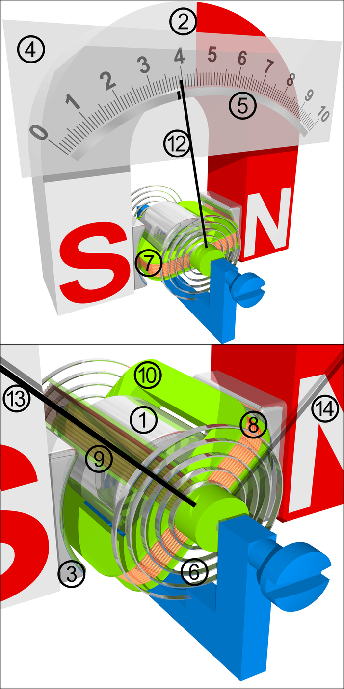
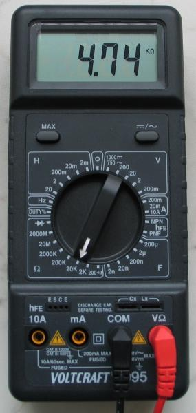

\(c\) … Proportionalitaetsfaktor Strom zu Drehmoment
\(k\) … Spiralfeder-Federkonstante
\(\alpha\) … Auslenkung des Zeigers
\(I\) … Messstrom durch die Drehspule
\(U_{x}\) … Eingangsspannung am ADW
\(U_{ref}\) … Referenzspannung
\(T_{1}\) … feste Integrationszeit
\(T_{2}\) … Abintegrationszeit bis zum Nulldurchgang
3.1 Messwerke — die Grundlage der analogen Anzeige
Klassisches Messgerät der Elektromesstechnik: Drehspulmesswerk. Lorentzkraft auf die stromdurchflossene Spule im Permanentfeld erzeugt ein Drehmoment; die Spiralfeder stellt das Gleichgewicht her — die Auslenkung ist proportional zum Strom:
Code
M_bm = MySymbol('M', description='Drehmoment der Lorentzkraft, proportional zum Strom')k_fed = Symbol('k', positive=True)alpha = MySymbol(r'\alpha', description='Auslenkung des Zeigers')c_sp = MySymbol('c', description='Proportionalitätsfaktor Strom zu Drehmoment')I_str = MySymbol('I', description='Messstrom durch die Drehspule')QBookHelpers.print_equation(Eq(alpha, c_sp*I_str/k_fed), label='eq-drehspul')
\[
\alpha = \frac{I c}{k}
\tag{3.1}\]
Mittelwertmesswerk: reagiert auf den arithmetischen Mittelwert — daher DC-fähig; mit vorgeschaltetem Gleichrichter auch für AC.
Dreheisenmesswerk: auch für AC direkt geeignet (quadratische Kennlinie → ungleichmäßige Skala).

Abbildung 3.1: Prinzip des Drehspulmesswerks: drehbare Spule im Feld eines Permanentmagneten (Søren Peo Pedersen / Dr. Schorsch, CC BY-SA 3.0, via Wikimedia Commons)
3.2 Blockschaltbild des digitalen Multimeters
Signalpfad des Multimeters vom Eingangsbereich bis zur Anzeige:
Abbildung 3.2: Blockschaltbild eines digitalen Multimeters: Eingangsschutz, Bereichsteiler, Verstärker, Analog-Digital-Umsetzer, Zählerlogik und Anzeige.
Eingangsschutz: Sicherungen, Varistoren, Klemmschaltung gegen Überlastung.
Eingangsteiler: hochohmige Widerstandskette (z. B. 10 M\(\Omega\)-Eingang) legt das Signal auf den Arbeitsbereich des Verstärkers.
Verstärker: Impedanzwandler/Auto-Zero-Verstärker entkoppelt Teiler und ADW.
ADW: im DMM überwiegend Zweiflankenverfahren (Dual Slope) — Integration über feste Zeit \(T_1\) gegen \(U_x\), dann Integration gegen die Referenz \(U_{ref}\) bis zum Nulldurchgang in \(T_2\):
Die Integration über eine volle Netzperiode unterdrückt Brummen; die Genauigkeit hängt allein von \(U_{ref}\) und dem Takt ab — Wandlerfehler, Drifts und Offset fallen heraus. - Zähler & Anzeige: Taktzähler während \(T_2\) → Messwert in counts, Dekodierung auf die 3½-/4½-stellige Anzeige.
Platzhalter — Zweiflankenverlauf: Diagramm der Integratorspannung beim Zweiflankenverfahren (linearer Anstieg während \(T_1\), linearer Abfall bis null während \(T_2\)), um das Zeitverhältnis anschaulich zu machen.

Abbildung 3.3: Handelsübliches digitales Multimeter (Michael Hückel, Public Domain, via Wikimedia Commons)
3.3 Kenngrößen des DMM
Stellenzahl und counts:\(3\tfrac{1}{2}\)-stellig → 1999 counts; Auflösung \(Q = \text{Endwert}/1999\).
Genauigkeitsangabe des Datenblatts (siehe Gleichung 1.13): \(\Delta U = \pm(a\,\%\ \mathrm{v.\,M.} + n\ \mathrm{digits})\).
True-RMS: echte Effektivwertbildung (Leistungsmessung proportional zu \(\overline{u^2}\)) statt bloßer Skalierung des Gleichrichtwerts — das Ergebnis wird von der Signalform unabhängig.
AC-Messbereiche sind kapazitiv gekoppelt; Mittelwert-Messwerke skalieren den Gleichrichtwert auf Sinus-RMS hoch. Bedienung: bei unbekannter Größe im größten Messbereich beginnen.